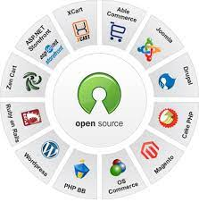

Brief Info |
||
|---|---|---|
|
Indreni Open Source Club is a congregation of Indrenians’ came with the purpose of upholding Open Source spirit among colleagues. Conducting events/seminars as well as workshops focusing on open-source technologies and platforms are the main activities one get to be a part in IOSC’s surrounding. Along with these, we also celebrate Software Freedom Day and events like Hacktoberfest with the presence of all Open Source geeks. |
|
What is Open Source? |
||
|---|---|---|
|
The term originated in the context of software development to designate a specific approach to creating computer programs. Today, however, “open source” designates a broader set of values- what we call “the open source way.” Open source projects, products, or initiatives embrace and celebrate principles of open exchange, collaborative participation, rapid prototyping, transparency, meritocracy, and community-oriented development. |
 |